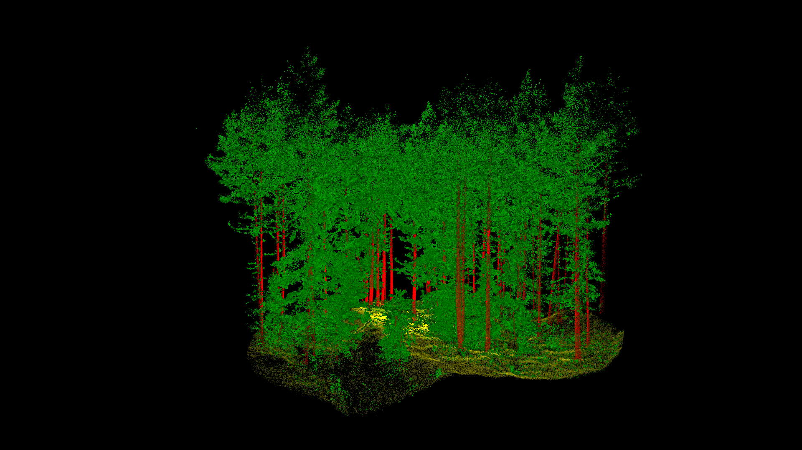
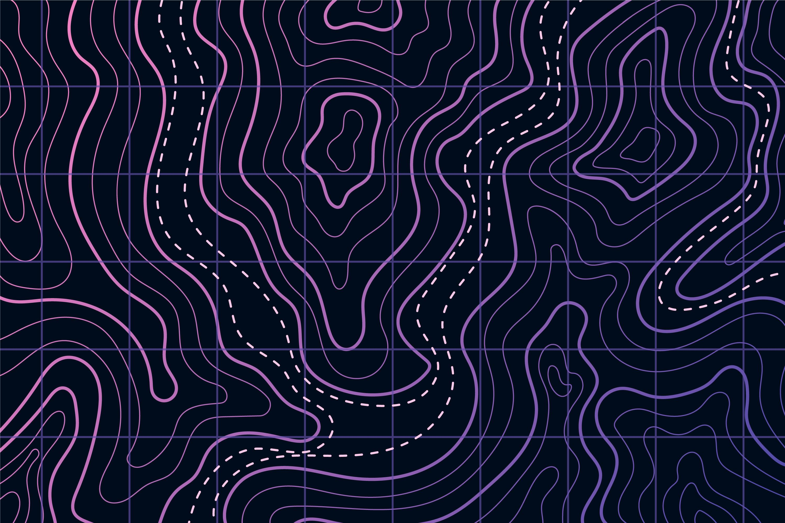

\(\mathrm{Pratyush}\sim f(\mathrm{GIS},\mathrm{Forestry},\mathrm{Data\ Science})\)
\((R^2<1)\)
Turning data into decisions.


Scroll
\((R^2<1)\)
Turning data into decisions.


Forest inventory, growth & yield, forest mensuration, small area estimation, mixed-effects and machine-learning models on plot data, forest resources management
Your forest inventory tells you what a handful of plots look like. I build the statistical models — small area estimation, mixed-effects, machine learning — that turn those plots into reliable biomass and volume estimates for every county, stand, or parcel you manage. Forestry is where I started, and it still frames how I read every dataset.
M.S. Forest Biometrics, GPA 4.0 — thesis on small area estimation for county-level forest biomass
ArcGIS Pro / Online / Enterprise Portal, geodatabase and schema design, feature & REST services, spatial data management, GIS QA/QC
A forest inventory, a utility network, a research archive — none of it holds up without the GIS underneath. I design the geodatabase schemas, publish the feature and REST services, and set up the ArcGIS Enterprise Portal access and QA that let a whole team work from the same spatial data.
Designed schemas and published feature services on an ArcGIS Enterprise Portal for FPL
Satellite & LiDAR remote sensing, image interpretation, change detection, canopy & vegetation monitoring, land-cover classification
No field crew can walk every acre of canopy or every mile of utility corridor. I work with LiDAR and satellite imagery to detect, classify, and monitor change — vegetation structure, land cover, encroachment — at a scale field work can't match.
Co-led a 38,616-mile positional-accuracy assessment using LiDAR-derived ground truth
Python, ArcPy, R, SQL, GDAL, custom toolboxes, automated geoprocessing, spatial databases
Spatial data scattered across shapefiles, LiDAR tiles, and field surveys doesn't help anyone decide anything. Whether it's a one-off geoprocessing script or a production toolbox, I build the Python and ArcPy pipelines, custom tools, and spatial databases that turn that mess into fast, repeatable analysis.
10 custom ArcPy tools + a full-stack LiDAR retrieval app — days of staging down to minutes
Spatial statistics, machine learning, suitability analysis, interactive web mapping, map production, technical presentations
An estimate nobody can read is just a number. I turn spatial analysis into the maps, interactive applications, and briefings a decision-maker actually uses — from statistical models and suitability surfaces to web maps and field-ready reports.
Interactive Web Mercator vs. Equal Earth data explorerTools & methods